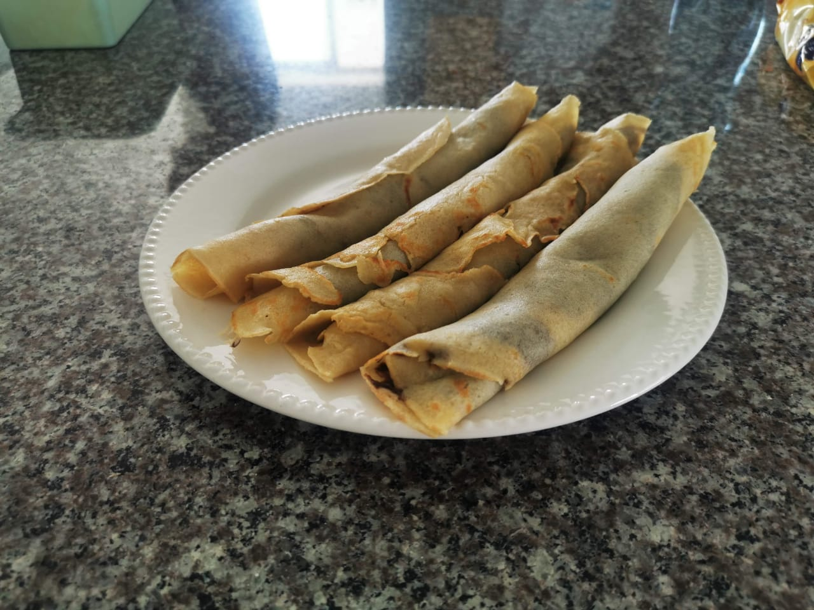

Palacinke

How to make this:
Ingredients for 10-ish palacinke:
- 2 eggs
- flour 200g
- mineral water 500ml
- vanilla
- sugar (to be added as needed)
- a pinch of salt
- a small spoonful of baking powder
Preparation:
- Separate the egg whites from the yolk and mix it until it turns quite foamy, add a pinch of salt, and the vanilla. Once there, add the yolks to the mix as well.
- Add the half liter of the mineral water, followed by flour (which needs to be sieved), sugar to taste, and the spoonful of baking powder. Keep mixing it all in.
- Once you have the mix well mixed (without any lumps, and dense but liquid), pre-heat you pan (use butter or lard)
- Using the laddle, spread the mix over a hot pan, and after a minute of two, flip the palackina on the oter side
- Apply/spread whatever you want in your palacinka, roll it, and enjoy!
- Whoever didn't help in the making will be involved in the cleaning afterwards :D